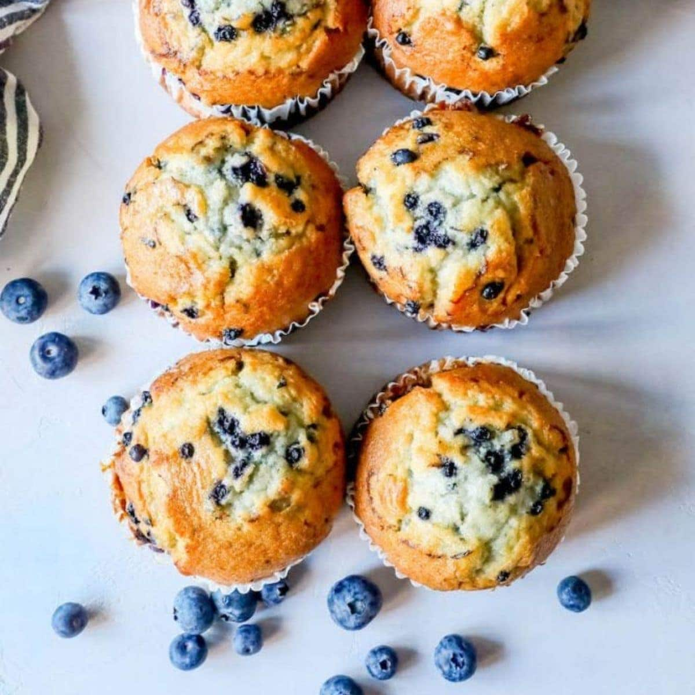

Blueberry Muffin Recipe

Indulge in the delightful aroma of freshly baked blueberry muffins with this easy-to-follow recipe. These moist and tender muffins are bursting with juicy blueberries and have a hint of vanilla that will leave your taste buds craving for more. Perfect for breakfast, brunch, or a sweet snack, these blueberry muffins are a true crowd-pleaser.
Ingredients
- 1 ½ cups all-purpose flour
- 3/4 cup granulated sugar, plus 1 tablespoon for muffin tops
- 1/4 teaspoon fine sea salt
- 2 teaspoons baking powder
- 1/3 cup neutral-flavored oil
- 1 large egg
- 1/3 to 1/2 cup milk
- 1 ½ teaspoons vanilla extract
- 6 to 8 ounces fresh or frozen blueberries
Instructions
- Heat oven to 400 degrees Fahrenheit. For big-topped muffins, line 8 standard-size muffin cups with paper liners. For standard-size muffins line 10 muffin cups. Fill the remaining cups with 1 to 2 tablespoons of water to help the muffins bake evenly.
- Whisk the flour, sugar, baking powder, and salt in a large bowl.
- Add oil to a measuring jug that holds at least 1 cup. Add the egg then fill the jug to the 1-cup line with milk (1/3 to 1/2 cup milk). Add vanilla and whisk to combine.
- Add milk mixture to the bowl with dry ingredients then use a fork to combine. Do not over mix. Fold in the blueberries
- Divide the batter between muffin cups. (If making big-topped muffins, the batter will come to the tops of the paper liners). Sprinkle a little sugar on top of each muffin.
- Bake muffins 15 to 20 minutes or until tops are no longer wet and a toothpick inserted into the middle of a muffin comes out with crumbs, not wet batter. Transfer to a cooling rack.
Enjoy!